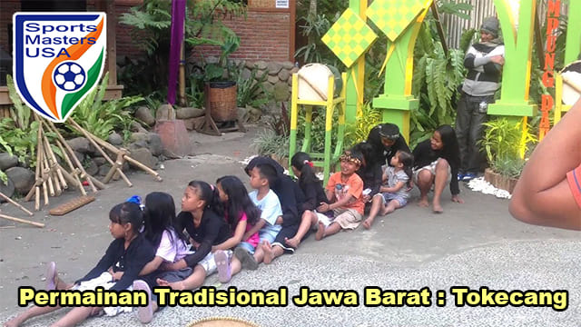
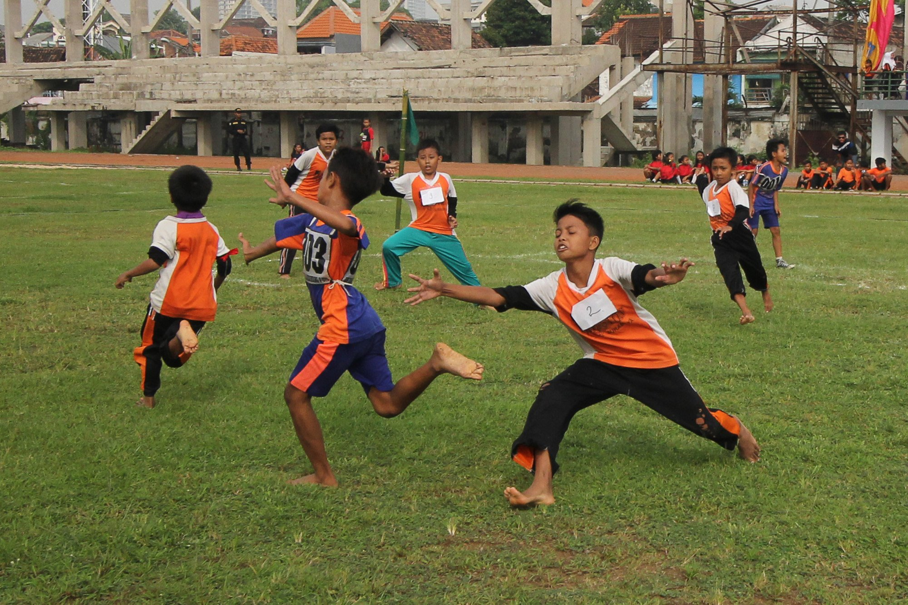

TOKECANG
Tokecang atau lebih disebut sebagai tokek makan kacang adalah permainan yang populer di Indonesia. Cara memainkan Tokecang cukup mudah, yaitu setiap orang harus saling berhadap-hadapan dengan berpasang-pasangan sambil berpegangan tangan.
< SILAHKAN SENTUH / ARAHKAN MOUSE ANDA >

BENTENGAN
Bebentengan juga dikenal dengan beberapa nama lain di Jawa Barat, misalnya rerebonan. Permainan ini juga memiliki sebutan lain di luar Jawa Barat, antara lain benteng-bentengan, jek-jekan, pris-prisan, pal-palan, dan omer.